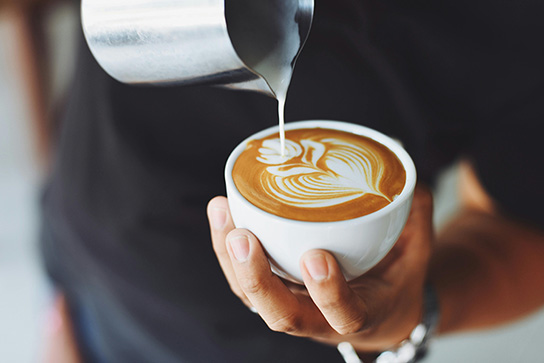

Start a Refreshing Day with a Mug of Coffee
Posted by Smrity on Wednesday, January 29th 2025
The Art of Coffee: From Bean to Cup
Coffee is more than just a beverage—it's a culture, a ritual, and a way of life. From the lush coffee farms to the steaming cup in your hands, every step of the journey matters. In this post, let’s explore the world of coffee, its origins, and why it’s worth savoring every sip .
What is Coffee?
Coffee is a beloved drink made from roasted coffee beans, which are the seeds of the Coffea plant. It’s one of the most popular beverages in the world, known for its rich flavor and energizing effects. But coffee is more than just a drink—it’s a story. Each cup tells a tale of the soil it grew in, the hands that harvested it, and the craft of brewing it to perfection.
The Coffee Journey: From Farm to Cup The Bean: Coffee starts as a cherry on a coffee plant. The beans are extracted, dried, and roasted to perfection.
- The Bean: Coffee starts as a cherry on a coffee plant. The beans are extracted, dried, and roasted to perfection.
- The Roast: Roasting transforms green coffee beans into the aromatic brown beans we know and love.
- The Brew: Whether it’s a French press, espresso machine, or pour-over, the brewing method brings out the unique flavors of the coffee.
Explore Our Coffee Collection Coffee Chronicles
Why Should You Care About Coffee?
Here are 5 reasons why coffee is worth your attention:
- It’s a Global Tradition: Coffee connects people across cultures and continents.
- It’s an Art: From latte art to brewing techniques, coffee is a creative outlet.
- It’s Sustainable: Supporting ethical coffee brands helps farmers and the planet.
- It’s Healthy: In moderation, coffee can boost energy, focus, and even mood.
- It’s Delicious: Nothing beats the aroma and taste of a perfectly brewed cup.
Hope You Will Explore Our Coffee Collection. We Will Be Waiting for You!